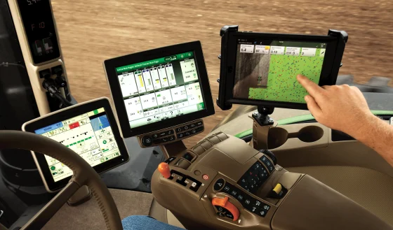
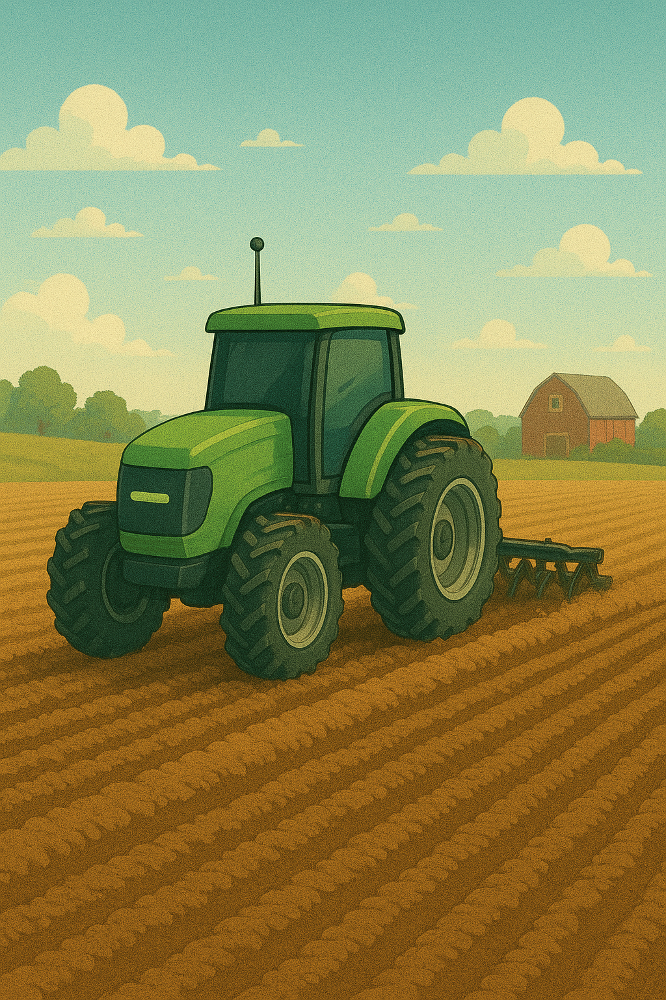

As people go into the farming business, in order to reduce harm and accidents, robots may be possible to in a way replace humans. Reduces physical labour.

A potential idea for future farms moving forward, is to have a clear dome over large rural farms. It'll create a strong oxygen filled atmosphere, and possibly a healthier ecosystem then we have now within farms. Have strong resistance to outside forces like pollutants and microplastics.

Completely automated farms, with the growing of Ai, it could advance to do farm work for us. Ai automated tractors that run on solar energy, using sensors to detect healthy plants, Sensors to irrigate and water plants. Potential Ai sorting systems of foods into specific places, like corn silos, large crates or facilities for foods. (Potatoes, carrots, lettuce, etc.)
Some more possible solutions can also include, healthy non plastic grown, pesticide free plants instead of our current way of farming, that puts many toxins, pesticides, and microplastics that infect the vegetation we feed upon. This soultion could increase American health and perhaps may even be better for people to eat, and make foods healthier, both chemically, neutritionally and for your digestive system..